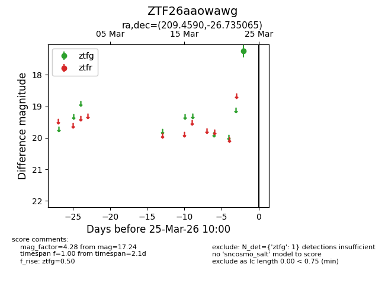
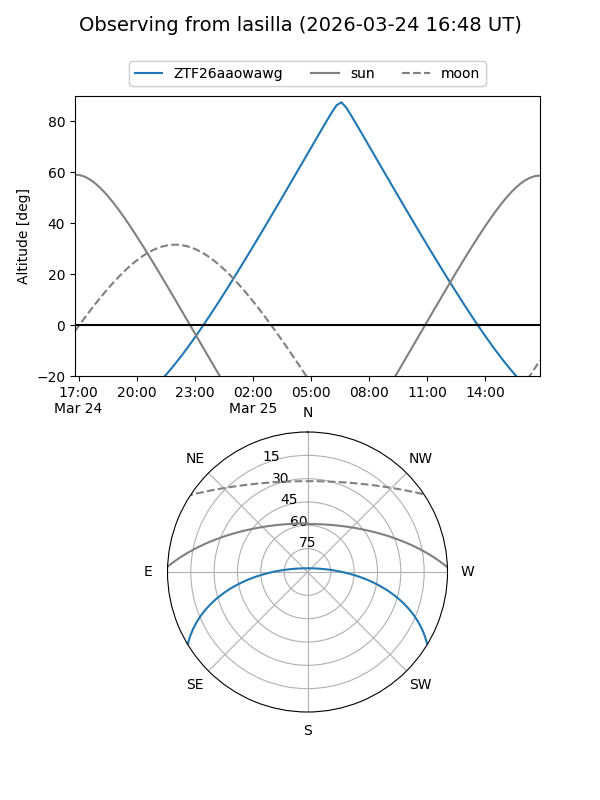
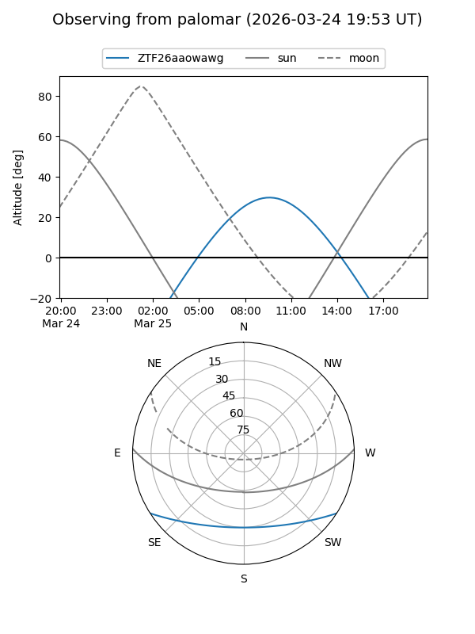

ZTF26aaowawg
Target ZTF26aaowawg at 2026-03-25 10:03
Aliases and brokers:
FINK: link
Lasair: link
ALeRCE: link
alt names
ZTF26aaowawg (ztf,fink_ztf)
Coordinates:
equatorial (ra, dec) = 209.4590,-26.73506
equatorial (HMS+DMS) = 13:57:50.15,-26:44:06.23
galactic (l, b) = (320.8168,+33.82020)
Flags:
Photometry:
last ztfg=17.24
1 ztfg detections
Lightcurve

Visibility


Additional plots